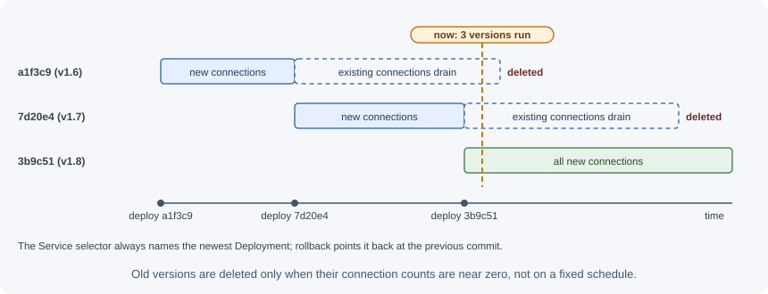
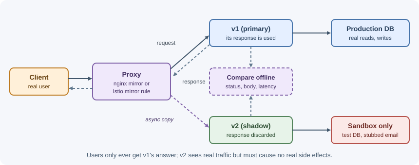
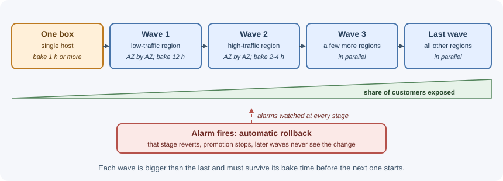
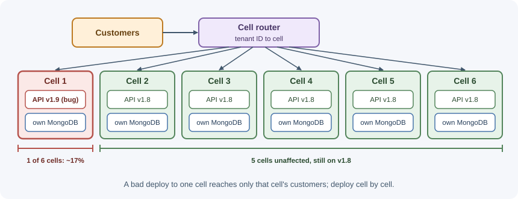

Advanced Deployment Patterns¶
The core strategies (recreate, rolling, blue-green, canary) answer "how do I replace version 1 with version 2?". Large systems add patterns that answer harder questions: how do I test a new version on real traffic without users seeing it, how do I keep WebSocket users connected through ten deploys a day, how do I make sure one bad deploy can only ever reach a small slice of customers, and how do I change an API without breaking clients I do not control?
This lesson covers red/black, ramped (incremental) rollouts, immutable deployments, rainbow deployments, shadow (mirrored) traffic, dark launches, ring and wave deployments, the one-box to one-AZ to one-region to everywhere progression, cell-based deployments, and pinned-version clients with gradual API migration. For each: what it is, how it works, when to use it, and what it costs.
Why it matters¶
As a system grows, the cost of a bad release grows faster than the system. A bug that reaches every region at once is a global outage; the same bug reaching one host for an hour is a log line. The patterns here all apply one idea, limit and measure exposure, along different axes: time (ramps, bake times), audience (rings, dark launches), infrastructure (one-box, AZ, region, cell), traffic (shadowing), and client versions (pinned APIs).
They are also how real outages are prevented. Google's report on its June 2025 Cloud outage noted that a code path was deployed region by region but was never exercised during the rollout, and that a global data replication then triggered it everywhere at once; its remediations include feature flags for critical binaries and incremental propagation of globally replicated data. CrowdStrike's July 2024 analysis committed to deploying content updates through canary rings instead of to every customer at once. Knowing these patterns is knowing how such incidents are kept small.
Real-world usage¶
- Amazon: one box, then waves. The Amazon Builders' Library article Automating safe, hands-off deployments describes production pipelines that deploy first to one box (typically serving at most 10% of requests for a Region or Availability Zone), then in waves: a low-traffic Region one AZ at a time, then a high-traffic Region, then more Regions in parallel. A typical pipeline waits at least one hour after each one-box stage and at least 12 hours after the first regional wave, rolls back automatically on alarms, and avoids nights, weekends, and holidays.
- Netflix and Spinnaker: red/black. Spinnaker, the delivery platform Netflix open-sourced, calls its blue-green variant red/black: deploy a new server group beside the old one, send traffic to it, then disable the old one while keeping it for rollback. The Spinnaker rollout strategies guide notes that Blue/Green replaces the Red/Black name in Spinnaker 1.30 and later, and also lists "highlander" (destroy the old versions) and "dark" (deploy without routing traffic) rollouts.
- Slack: cells. Slack's migration to a cellular architecture describes making each AWS Availability Zone a cell: services only send traffic within their own AZ, and operators can drain an AZ at the edge load balancers in 1% steps, with a goal of removing its traffic within 5 minutes, without first knowing the root cause.
- AWS: cell-based architecture. The whitepaper Reducing the Scope of Impact with Cell-Based Architecture explains how AWS service teams have used cells for more than a decade to apply the fault isolation of AZs and Regions inside a workload.
- Microsoft: rings and tiers. Microsoft's Safe deployment practices guide shows a five-tier model used by a Microsoft team, from tier 0 (internal users, highest risk tolerance) to tier 4 (everyone), with a bake time of about a day per tier including a period of peak usage.
- Stripe: pinned API versions. In
APIs as infrastructure: future-proofing Stripe with versioning,
Stripe explains that an account is pinned to the newest API version on
its first request, can override it per request with the
Stripe-Versionheader, and that older versions are served by "version change modules" that transform responses backward. - GitHub: Scientist. Scientist: Measure Twice, Cut Once describes running old and new code paths side by side on real requests, comparing results, and always returning the old result, which GitHub used to rewrite its permissions code safely: shadowing inside one process.
- Rainbow deploys. Brandon Dimcheff's Rainbow Deploys with Kubernetes describes naming a Deployment per git commit instead of per color, so chat backends holding WebSocket connections that drain over 24 to 48 hours could still deploy many times a day.
Popular tools and providers: Spinnaker, Argo Rollouts, Flagger, AWS
CodeDeploy and CodePipeline, Istio and Envoy (mirroring and weighted
routing), nginx mirror, Diffy-style response comparison, GitHub
Scientist and its ports, LaunchDarkly and other flag services for dark
launches, and GitHub environments or Azure Pipelines stages for rings.
How it works¶
Red/black¶
What it is. Netflix's name, carried into Spinnaker, for a blue-green variant built on immutable server groups (auto scaling groups or Kubernetes ReplicaSets).
How it works. The pipeline creates a new server group with the new image beside the old one and waits until it is healthy. It then enables the new group in the load balancer and disables the old group: the old instances stay running but receive no traffic. Rollback re-enables the old group, which is warm and immediate. After a bake period the old group is destroyed. A "highlander" rollout ("there can be only one") destroys the old group as soon as the new one is healthy.
When to use it. Instance-based services in an auto-scaled fleet where fast rollback matters more than briefly paying for double capacity.
Downsides. Double capacity during the bake period, the same shared database constraints as blue-green, and, like blue-green, everyone moves at once unless combined with a canary first.
Ramped (incremental) rollout¶
What it is. Traffic or instances move to the new version in fixed
increments on a timer: for example 10% more every minute
(CodeDeployDefault.LambdaLinear10PercentEvery1Minute), or rolling
batches that grow (1 instance, then 10%, then 25%, then the rest).
How it differs from a canary. A canary waits for analysis to pass before each step; a ramp moves on a schedule and relies on alarms to stop it. A ramp is simpler and needs less traffic for statistics, but it can push a subtle regression to everyone before anyone notices.
When to use it. Services with good alarms but too little traffic for meaningful canary statistics, or as the "finish" phase after a canary has passed its first steps.
Downsides. Exposure grows whether or not the version is healthy; choose step sizes and intervals long enough for alarms to fire (an alarm that needs 5 minutes of data is useless on a 1-minute ramp).
Immutable deployments¶
What it is. Servers or containers are never changed after they start.
To deploy, you build a new image (container image, VM image), start new
instances from it, move traffic, and terminate the old instances. Nobody
runs apt upgrade, git pull, or edits configuration on a live server.
How it works. The deploy unit is the image, identified by a digest or image ID. Every strategy above can be implemented immutably: a rolling update of a Kubernetes Deployment replaces pods, and red/black replaces whole server groups.
When to use it. Almost always for stateless services. It removes configuration drift ("works on server 3 only"), makes every instance identical to what was tested, and makes rollback "start the previous image".
Downsides. Every change, even a one-line config fix, needs a build and a rollout, so pipelines must be fast. Local state on instances is lost on every deploy, so state must live in databases, object storage, or volumes. Boot time matters. See immutable infrastructure and GitOps.
Rainbow deployments¶

What it is. Blue-green with as many colors as you need: every release gets its own Deployment (named by commit SHA or version), and several versions stay alive at once.
How it works. The router (a Kubernetes Service selector, a load balancer target group) sends new connections to the newest version. Older versions keep only their existing long-lived connections and are deleted once those connections have drained to near zero. Rollback is pointing the router back at the previous version, which is still running.
When to use it. Long-lived connections that you do not want to cut: WebSockets for chat or live collaboration, streaming, long-running consumer sessions, game servers. TaskFlow Web's live task board uses a WebSocket per open browser tab; a rolling deploy would disconnect thousands of tabs and cause a reconnect storm.
Downsides. Many versions run at once, so compatibility rules (schema, events, caches) must hold across several versions, not two. Capacity and cost grow with each live version. Cleanup needs automation that watches connection counts; without it, old versions run for weeks. A security fix must reach old versions too, which may mean forcing reconnects after all.
Shadow (mirrored) traffic¶

What it is. A copy of real production requests is sent to the new version, and its responses are thrown away (or only compared). Users always get the old version's answer.
How it works. A proxy duplicates requests: nginx's mirror module,
Istio's mirror with mirrorPercentage, Envoy's request mirroring, or
recording and replaying traffic. Tools in the Diffy family compare the
two responses; GitHub's Scientist does the same inside one process by
running old and new code and returning the old result.
When to use it. Rewrites and migrations where correctness is hard to test with fixtures: a new search backend, a rewritten pricing engine, a database migration (read from both, compare), or performance testing a new version with real traffic shapes.
Downsides and dangers.
- Side effects. A shadow that writes to the production database, sends email, charges cards, or publishes events causes real damage twice. Shadow only read paths, or point the shadow at sandboxed dependencies and disable side effects with a request marker.
- Load. Mirroring 100% doubles the load on everything the shadow touches. Start with a small mirror percentage.
- Noise. Responses legitimately differ (timestamps, generated IDs, ordering). Comparison needs normalization rules.
- Proxy cost. Keep mirror timeouts short; a slow mirror target ties up proxy resources.
Dark launches¶
What it is. Deploying a feature to production and exercising it without users seeing it: either by running its code path for real requests and discarding the result, or by enabling it only for staff.
How it works. A feature flag guards the new code. In the dark phase the flag is off for users; the code still runs for internal accounts, or runs in the background ("compute the new recommendations, log them, show the old ones"). When metrics look good, the flag is turned on for 1% of users, then more.
When to use it. Features that depend on production scale or data: load on a new storage path, a new ranking algorithm, a new integration. Also to separate the technical risk (does it work under load?) from the product launch date.
Downsides. Hidden load: a dark-launched code path consumes real capacity. Flags left behind after launch become debt. Dark results must be kept away from users, including through caches and logs.
Rings and waves¶
What it is. Users or infrastructure are grouped into rings ordered by risk tolerance, and every release goes through them in order with a bake time in each:
| Ring | Typical members | What it catches |
|---|---|---|
| 0 | The owning team, test tenants | Obvious breakage, before any customer |
| 1 | All employees ("dogfood") | Everyday workflows, real usage patterns |
| 2 | Opted-in beta customers or a small region | Diversity of real customer data and devices |
| 3 | A larger slice (one large region, 25%) | Scale problems |
| 4 | Everyone | Remaining long-tail issues |
How it works. The pipeline is a sequence of stages, one per ring, each gated by health checks and a bake time. For server software, rings are usually infrastructure (hosts, AZs, regions); for client software they are audiences (internal, beta channel, staged percentages).
When to use it. Any software with a large user base where a bad release has a high cost, including server fleets, desktop apps, mobile apps, and configuration or content pushes.
Downsides. Total rollout time grows to days, so an urgent fix needs a documented expedited path (Microsoft's guide lets the most severe hotfixes skip tiers with approval). Inner rings must be representative, or problems slip through: employees may all use the same browser, region, and account type.
One box, then one AZ, then one Region, then everywhere¶

This is the infrastructure version of rings, as described in the Amazon Builders' Library:
- One box: a single host (or a single container task) receives a small share of one AZ's traffic. Its own metrics are compared with the rest of the fleet, and it bakes for at least an hour.
- First wave: a low-traffic Region, one Availability Zone at a time, so a failure affects one AZ, which the system is already built to survive.
- Later waves: a high-traffic Region, then several Regions in parallel, each still one AZ at a time, with shorter bake times as confidence grows.
- Automatic rollback at every stage when alarms fire, and a block on promotion while any high-severity alarm is active.
Worked example: TaskFlow API runs in 3 Regions with 3 AZs each and 10 hosts per AZ. The one box is 1 of 30 hosts in a Region, about 3.3% of that Region's traffic and about 1.1% of global traffic. The first AZ in the first Region is about 11% of global traffic, but if it fails, the other two AZs in that Region can absorb its load. A bug that slips past the one box therefore reaches at most a fraction of users for minutes, not everyone.
The cost is time: one hour, twelve hours, a few hours per later wave, and no deploys at night or on weekends add up to days for a global rollout. Amazon's article reports that its default pipelines take roughly four to five business days to deploy globally.
Cells and blast radius¶

What it is. The whole stack (load balancer, API instances, queues, database) is copied into several independent cells, and each customer lives in exactly one cell. A thin cell router maps a request's tenant or customer ID to its cell.
How it works for deployments. Deploy to one cell, bake, then the next.
A bad deploy, a poison message, a runaway query, or a corrupted index
can only affect the customers of the cells it has reached. With N cells,
the first deploy step exposes 1/N of customers, and so does any
failure that stays inside a cell. Cells also cap the maximum size of each
database and fleet, so a cell can be load-tested at its full size.
When to use it. Multi-tenant services with strict availability targets, or where one customer's behavior (a noisy tenant) must not affect others. Slack's AZ-based cells show a lighter variant: cells by AZ, which makes draining a failing AZ a routine action.
Downsides. Cells multiply infrastructure and operations; you now run N databases. Anything that crosses cells (global search, admin reports, a customer who must move between cells) needs extra design. The cell router and any global control plane become the most critical components: a bad change there reaches every cell, so they need the same cautious, staged rollout themselves.
Pinned-version clients and gradual API migration¶
![Diagram: three clients call one API, each pinned to a dated version: the web app on the latest 2026-11-01, a mobile app release pinned to 2025-03-15, and a partner integration pinned to 2024-06-01; a core handler builds only the latest response shape and returns it to the web app; for older versions the response passes through version change modules in reverse, first mapping the new blocked status back to open for the mobile app, then turning the due object back into a dueDate string for the partner; usage is tracked per version so old versions can be retired after notice.](../api-version-pinning.svg)
Server deploys finish in hours; clients you do not control (mobile apps, partner integrations, customers' scripts) upgrade over months or never. A deployment strategy for an API therefore includes a strategy for changing the API contract.
What it is. Each client is pinned to an API version: an explicit
version header, a version in the URL (/v2/tasks), or a version stored
on the account when it first called the API (Stripe's approach). The
server keeps serving every supported version.
How it works. The core code produces only the newest response shape. Each breaking change ships with a small transform that converts a newer response into the previous version's shape (and, for requests, the old request shape into the new one). A request pinned to an old version passes through the transforms in reverse order. Additive changes (a new optional field) need no new version at all.
Gradual migration then looks like this:
- Ship the new version; new clients use it, old clients keep their pin.
- Measure usage per version and per client.
- Announce deprecation with a date; return a
DeprecationorSunsetheader and notify the owners of clients still on old versions. - Retire the old version only when its traffic is near zero or the notice period has ended.
When to use it. Public and partner APIs, and APIs behind mobile apps. For an internal API whose only client is your own SPA, backward compatibility for one or two releases (expand and contract) is usually enough.
Downsides. Every supported version is code you must test. Transform chains grow, and without usage data old versions are never retired. API versioning strategies are compared in keeping frontend and backend in sync, and deprecation and sunset policies are covered in release trains and release management.
When to use and when not to use¶
| Problem | Pattern | Avoid it when |
|---|---|---|
| Need instant rollback for an instance-based fleet | Red/black | Capacity cannot double, even briefly |
| Too little traffic for canary statistics | Ramped rollout with alarms | Alarms are slow or missing |
| Configuration drift, snowflake servers | Immutable deployments | Never; but state must be externalized first |
| Long-lived WebSocket or streaming connections | Rainbow deployments | Versions cannot stay compatible across several releases |
| Rewrite whose correctness is hard to test | Shadow traffic or in-process comparison | The path has side effects you cannot stub |
| Feature needs production scale before launch | Dark launch behind a flag | You cannot afford the hidden load |
| Large user base, high cost of a bad release | Rings or waves with bake times | A single small service with few users (the delay costs more than it saves) |
| Global, multi-region service | One box, one AZ, one Region, then everywhere | Single-region systems (use one box plus AZ by AZ) |
| Multi-tenant service with strict availability goals | Cells, deployed cell by cell | Small systems where N copies cost more than the risk |
| Clients you do not control | Pinned versions and gradual migration | Only your own client calls the API |
Practical examples¶
Mirroring a share of traffic with nginx¶
# /etc/nginx/conf.d/taskflow-shadow.conf
upstream taskflow_v1 { server 10.0.1.10:3000; server 10.0.2.10:3000; }
upstream taskflow_v2_shadow { server 10.0.3.10:3000; }
server {
listen 443 ssl;
server_name api.taskflow.example.com;
# ssl_certificate and ssl_certificate_key as in the main config
# Mirror only the read-heavy search endpoint
location /tasks/search {
mirror /mirror;
mirror_request_body off; # GET requests have no body to copy
proxy_pass http://taskflow_v1;
}
location / {
proxy_pass http://taskflow_v1; # everything else is not mirrored
}
location = /mirror {
internal;
proxy_pass http://taskflow_v2_shadow$request_uri;
proxy_set_header X-Shadow-Request "1";
proxy_connect_timeout 1s;
proxy_read_timeout 2s;
}
}
Mirroring is configured per location, so mirror only endpoints that are
read-only by design. The X-Shadow-Request header tells the shadow it
must not cause side effects, and the guard below refuses writes even if
one slips through.
Mirroring with Istio¶
# k8s/taskflow-api-virtualservice.yaml
apiVersion: networking.istio.io/v1
kind: VirtualService
metadata:
name: taskflow-api
spec:
hosts:
- taskflow-api
http:
- route:
- destination:
host: taskflow-api
subset: v1
weight: 100
mirror:
host: taskflow-api
subset: v2
mirrorPercentage:
value: 10.0 # copy 10% of requests to v2; responses are ignored
Guarding side effects in a shadow instance¶
// src/middleware/shadow-guard.js: make shadow requests side-effect free
export function shadowGuard({ email, payments, events }) {
const noop = async () => ({ skipped: "shadow" });
return (req, res, next) => {
const isShadow =
process.env.APP_ROLE === "shadow" || req.get("X-Shadow-Request") === "1";
// Request-scoped adapters: real ones for users, no-ops for shadows
req.deps = isShadow
? { email: { send: noop }, payments: { charge: noop }, events: { publish: noop } }
: { email, payments, events };
if (isShadow && req.method !== "GET") {
return res.status(202).json({ shadow: true }); // never apply writes
}
next();
};
}
Route handlers call req.deps.email.send(...) instead of importing the
email client directly, so a shadow can never reach the real provider.
Running the shadow with its own database user that only has read
permissions adds a second, independent guard.
A rainbow deploy script for Kubernetes¶
#!/usr/bin/env bash
# scripts/rainbow-deploy.sh: one Deployment per commit; old ones drain
# usage: rainbow-deploy.sh <commit-sha>
set -euo pipefail
sha="$1"
name="taskflow-realtime-${sha:0:7}"
# 1. Create this version's Deployment from a template (labels include the sha)
sed -e "s/__NAME__/$name/g" -e "s/__SHA__/$sha/g" k8s/realtime-deployment.tpl.yaml |
kubectl apply -f -
kubectl rollout status "deployment/$name" --timeout=5m
# 2. Point new connections at it; existing sockets stay where they are
kubectl patch service taskflow-realtime \
-p "{\"spec\":{\"selector\":{\"app\":\"taskflow-realtime\",\"version\":\"$sha\"}}}"
# 3. Delete older versions whose open connections have drained below 20
for old in $(kubectl get deployments -l app=taskflow-realtime \
-o jsonpath='{.items[*].metadata.name}'); do
[ "$old" = "$name" ] && continue
open=$(./scripts/open-connections.sh "$old") # reads the app's metric
if [ "$open" -lt 20 ]; then
echo "deleting $old ($open connections left)"
kubectl delete deployment "$old"
fi
done
Run step 3 on a schedule as well as after each deploy, so drained versions are cleaned up even when no new release happens. Rollback is step 2 with the previous SHA.
Waves with bake times in GitHub Actions¶
# .github/workflows/release-waves.yml
name: Release in waves
on:
workflow_dispatch:
inputs:
image:
description: Image digest to release
required: true
env:
IMAGE: ${{ inputs.image }} # scripts read "$IMAGE"; never inline inputs in run:
jobs:
one-box:
runs-on: ubuntu-latest
environment: prod-one-box
steps:
- uses: actions/checkout@v7
- run: ./scripts/deploy.sh one-box "$IMAGE"
- run: ./scripts/bake.sh one-box 60 # watch alarms for 60 minutes
wave-1:
needs: one-box
runs-on: self-hosted # a 12-hour bake: GitHub-hosted jobs stop at 6 hours
environment: prod-wave-1 # e.g. required reviewers
steps:
- uses: actions/checkout@v7
- run: ./scripts/deploy.sh eu-west-1 "$IMAGE" --az-by-az
- run: ./scripts/bake.sh eu-west-1 720
wave-2:
needs: wave-1
runs-on: ubuntu-latest
environment: prod-wave-2
steps:
- uses: actions/checkout@v7
- run: ./scripts/deploy.sh us-east-1 "$IMAGE" --az-by-az
- run: ./scripts/bake.sh us-east-1 180
#!/usr/bin/env bash
# scripts/bake.sh: fail (and trigger rollback) if alarms fire during the bake
# usage: bake.sh <target> <minutes>
set -euo pipefail
target="$1"; minutes="$2"
end=$(( $(date +%s) + minutes * 60 ))
while [ "$(date +%s)" -lt "$end" ]; do
if ./scripts/alarms-firing.sh "$target"; then
echo "alarm during bake of $target; rolling back" >&2
./scripts/rollback.sh "$target"
exit 1
fi
sleep 60
done
echo "$target baked for $minutes minutes without alarms"
GitHub-hosted runner jobs have a maximum run time (6 hours at the time of writing), so very long bakes are better implemented as a scheduled promotion job or in a dedicated delivery tool. The structure, deploy one target, watch, promote or roll back, stays the same.
A cell router lookup¶
// src/cells/cell-for-tenant.js: map a tenant to its cell
import { createHash } from "node:crypto";
const CELLS = ["cell-1", "cell-2", "cell-3", "cell-4", "cell-5", "cell-6"];
// Explicit placements win: used to move a tenant or isolate a noisy one
const placements = new Map([
["tenant-enterprise-0042", "cell-6"],
]);
export function cellForTenant(tenantId) {
const placed = placements.get(tenantId);
if (placed) return placed;
// Stable hash: the same tenant always lands in the same cell
const n = createHash("sha256").update(tenantId).digest().readUInt32BE(0);
return CELLS[n % CELLS.length];
}
In production the placement table lives in a small, highly available
store, and the router caches it. Adding a cell changes n % length for
most tenants, so real systems record each tenant's cell explicitly once
assigned instead of recomputing it.
Serving pinned API versions¶
// src/api/versioning.js: serve old API versions from the newest code
const VERSIONS = ["2024-06-01", "2025-03-15", "2026-11-01"]; // oldest to newest
const LATEST = VERSIONS.at(-1);
// Each entry turns a response of that version into the previous version's shape
const downgrades = {
"2026-11-01": (task) => ({
...task,
status: task.status === "blocked" ? "open" : task.status,
}),
"2025-03-15": ({ due, ...task }) => ({
...task,
dueDate: due ? due.date : null,
}),
};
export function apiVersion(req, res, next) {
const requested = req.get("TaskFlow-Version") ?? req.account?.pinnedVersion ?? LATEST;
if (!VERSIONS.includes(requested)) {
return res.status(400).json({ error: `Unknown API version ${requested}` });
}
req.apiVersion = requested;
res.set("TaskFlow-Version", requested);
next();
}
export function toVersion(task, version) {
let out = task;
for (let i = VERSIONS.length - 1; VERSIONS[i] !== version; i -= 1) {
out = downgrades[VERSIONS[i]](out); // undo newer changes one by one
}
return out;
}
// Usage in a route:
// res.json(toVersion(latestShapeTask, req.apiVersion));
A task built in the latest shape ({ due: { date, timezone }, status:
"blocked" }) is returned unchanged to a client on 2026-11-01, with
status: "open" to a client on 2025-03-15, and additionally with a
plain dueDate string to a client on 2024-06-01. Logging
req.apiVersion per client gives the usage data needed to retire old
versions.
Best practices¶
- Combine patterns: one box, then a canary within each wave, behind feature flags, deployed immutably.
- Put the cheapest, fastest-failing stage first (one box, ring 0) and the slowest, broadest last.
- Give every stage automatic rollback on alarms and a bake time long enough to include real peak traffic.
- Stage configuration and data pushes (feature files, policies, replicated metadata) with the same caution as code.
- Shadow only side-effect-free paths, or stub every side effect; start with a small mirror percentage.
- Automate cleanup: rainbow versions, old server groups, and stale flags.
- Treat the cell router and global control planes as the most critical deploys you have.
- Track API usage per version and per client before you deprecate anything.
- Keep a documented, audited expedited path for urgent fixes.
In production¶
- A shadow deployment sent real emails.
Detect: customers receive duplicate messages; the provider's logs
show sends from the shadow's hosts. Cause: the shadow used live
credentials and the mirrored path had a side effect. Fix: sandbox
credentials for shadows, request-scoped no-op adapters, and mirroring
only
GETroutes. - Production latency rose when mirroring was enabled. Detect: database CPU and p99 latency climb at the moment the mirror percentage changed. Cause: the shadow shares the production database or cache, doubling load. Fix: point the shadow at a replica or copy, and mirror a smaller share.
- The cluster fills up with old versions.
Detect: dozens of
taskflow-realtime-*Deployments, rising node count and cost. Cause: rainbow cleanup only runs after deploys, or connection counts never reach the threshold because of idle clients. Fix: scheduled cleanup, a maximum age after which clients are asked to reconnect, and alerts on the number of live versions. - A bad router configuration took down every cell. Detect: all cells report errors simultaneously; cell-level deploys were clean. Cause: the shared routing or control-plane layer was changed globally. Fix: deploy router and control-plane changes with the same staged rollout as cells, and keep them as small as possible.
- An urgent security fix took four days to reach all regions. Detect: the release sat in bake stages while the vulnerability was public. Cause: the pipeline had no expedited path. Fix: a documented hotfix path with shorter bakes and explicit approval, used rarely and reviewed afterwards.
- An old API version can never be retired.
Detect: the oldest version still serves 8% of requests a year after
deprecation. Cause: no per-client usage data, no outreach, no sunset
date. Fix: log version per client, send
DeprecationandSunsetheaders, contact remaining clients, and enforce a date.
Important terminology¶
- Red/black: Netflix and Spinnaker's name for blue-green with immutable server groups, where the old group is disabled but kept.
- Highlander rollout: a rollout that destroys old versions once the new one is healthy.
- Ramped (linear) rollout: shifting traffic in fixed increments on a schedule.
- Immutable deployment: replacing instances with new ones built from a new image instead of changing running ones.
- Rainbow deployment: many live versions at once, each draining its own long-lived connections.
- Shadow (mirrored, dark) traffic: copies of real requests sent to a new version whose responses are discarded.
- Dark launch: a feature running in production without being visible to users.
- Ring: a group of users or infrastructure that receives a release at the same stage.
- Wave: one stage of a multi-region rollout.
- One box: a single host that receives a release first.
- Cell: an independent, complete copy of a service serving a fixed subset of customers.
- Blast radius: the share of users or systems a failure can affect.
- Pinned version: the API version a client is locked to until it upgrades.
Common mistakes and misconceptions¶
- Thinking more stages always means more safety; stages that are not representative only add delay.
- Mirroring write traffic and assuming the shadow is harmless.
- Deploying code carefully in waves while pushing configuration or data globally in seconds.
- Treating cells as free; they multiply operations and need a strong router.
- Keeping rainbow versions forever because nothing deletes them.
- Versioning every API change, including additive ones that need no new version.
- Forgetting that a dark-launched feature still consumes production capacity.
Revision questions¶
- How does red/black differ from a highlander rollout, and what does each cost?
- When would you choose a ramped rollout over a canary with analysis?
- Why do rainbow deployments need compatibility across more than two versions?
- List three ways shadow traffic can harm production and how to prevent each.
- A service runs in 4 Regions with 3 AZs each and 8 hosts per AZ. What share of global traffic does the one-box stage receive, and what share does the first AZ receive?
- With 10 equal cells, what share of customers does a bug in the first deployed cell affect? What component can still cause a global outage?
- How does a server serve a client pinned to an API version that is two breaking changes old?
- Why should configuration and data pushes go through staged rollouts too? Give a public example.
Further learning¶
- Amazon Builders' Library: Automating safe, hands-off deployments
- AWS: Reducing the Scope of Impact with Cell-Based Architecture
- Spinnaker: Kubernetes rollout strategies
- Istio: Traffic mirroring
- nginx: ngx_http_mirror_module
- Microsoft: Safe deployment practices
- Next: feature flags and progressive delivery. Back to the deployment strategies overview.